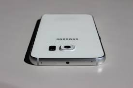
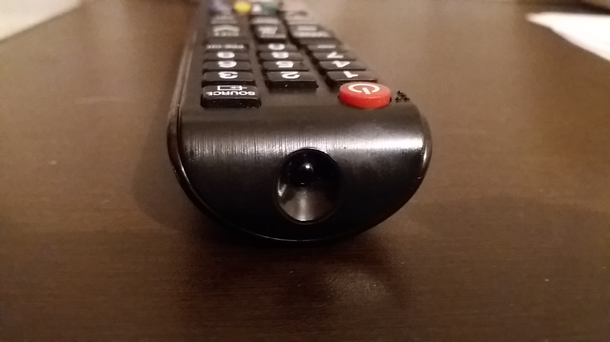

Tenemos dos tipos de trasmision no guiada que son:
Direccional
estan funcionan mandando su señal de un emisor a un receptor para que no haya algun problema con la informacion deben estar muy bien alineadas
Omidireccional
estan funcionan de una manera mejor que las direccionales ya que no necesitan estar alineadas para que la trasmision sea un exito, ya que este tipo de señal se envia en todas direcciones
Infrarrojo
Las redes por infrarrojo permiten la comunicación entre dos nodos, usando una serie de leds infrarrojos, estas redes permiten conectar dos dispositivos con puertos infrarrojos incorporador y ubicados en el mismo espacio. Simplemente se alinean los puertos infrarrojos y se trasmiten los datos.
Los puertos infrarojos en los celulares era muy comun hace algunos años ya que era un medio de trasmisión de datos muy usado. En estos dias los celulares que tienen incluido un puerto infrarrojo son pocos, pero aquellos que lo tienen son demaciado utiles ya que hoy en dia se puede manejar, ventiladores, televisiones, proyectores, decodificargor, aire acondicionado, bocinas, etc. Tener el modo de controlar todos estos aparatos desde un celular es una gran ventaja, hoy en dia los puertos infrarrojos se utilizan mas para la manipulacion de estos aparatos electronicos que para el envio de trasmisión, en donde podemos ver los puertos infrarrojos es en los celulares(algunos) y en los controles remotos


Se dejaron de utilizar para medios de trasmisión porque aparecieron medios mas compatibles ya que muchas perosnas no tenian telefonos con infrarrojos y eso provoco que casi nadie pudiera trasmitir informacion tan seguido.
las ventajas que tenemos al utilizar puertos infrarrojos son las siguientes:
ofrece un amplio ancho de banda para trasmitir señales a una velocidad de 10 Mbps
tiene una longitud de onda sercana a la luz, se comporta como esta
utilizan un protocolo simple y componentes sumamente economicos y de bajo consumo de potencia
Las desventajas serian las siguientes:
es susamente sensible a objetos moviles que interfieran con la comunicacion del emisor y el receptor
la luz solar, lamparas incadescetes pueden interferir con la señal
para utilizarse debe estar en un lugar sin luz directa
Podemos clasificar los infrarrojos de dos maneras
Los enlaces dirigidos
emplean trasmisores y receptores altamente direccionales los cuales deben apuntar uno al otro o hacia en un area comun.
Los enlaces no dirigidos
en estos se emplean trasmisores y receptores de gran angulo, reduciendo asi la necesidad de tal apuntamiento, en los enlaces directos se maximisa la eficiencia de potencia ya que esta se dirige en un rango pequeño de direcciones y por lo mismo se minimixa la perdida de propagacion y la recepcion de ruido causada por la luz ambiental.